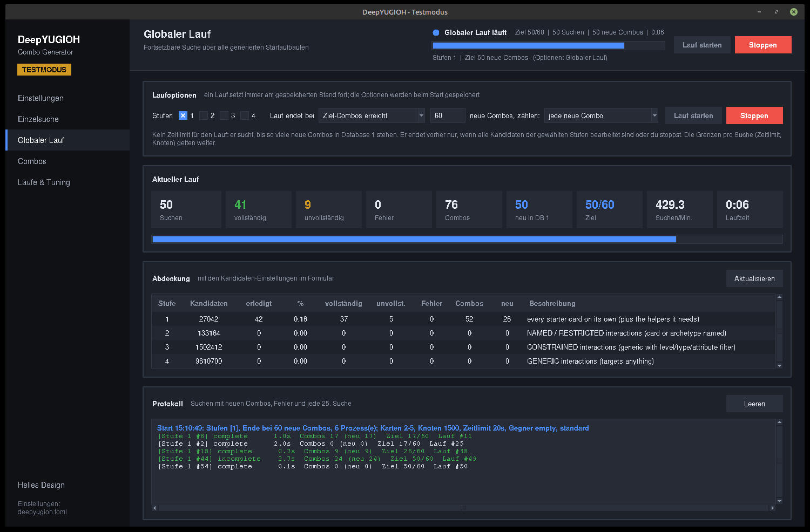
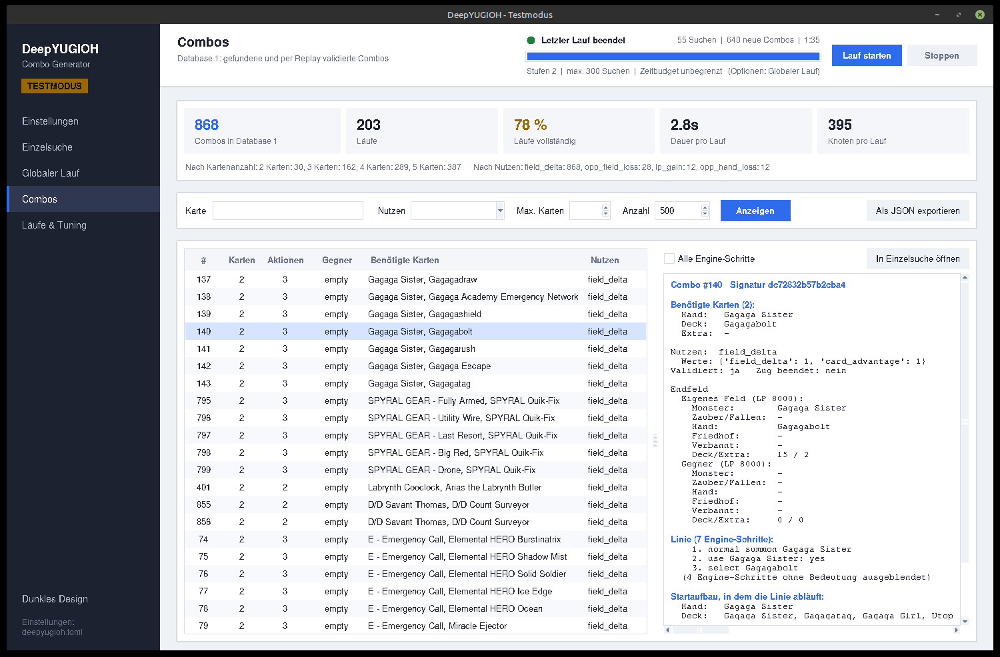
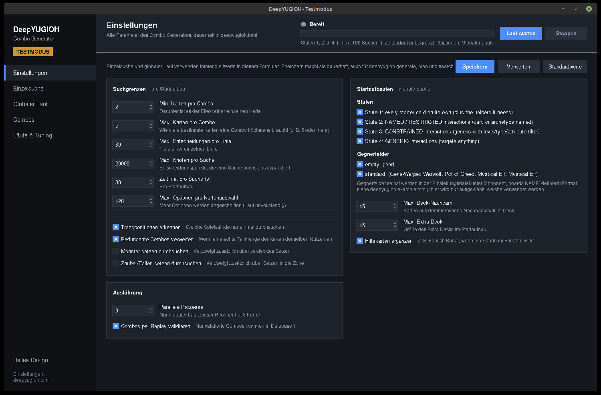
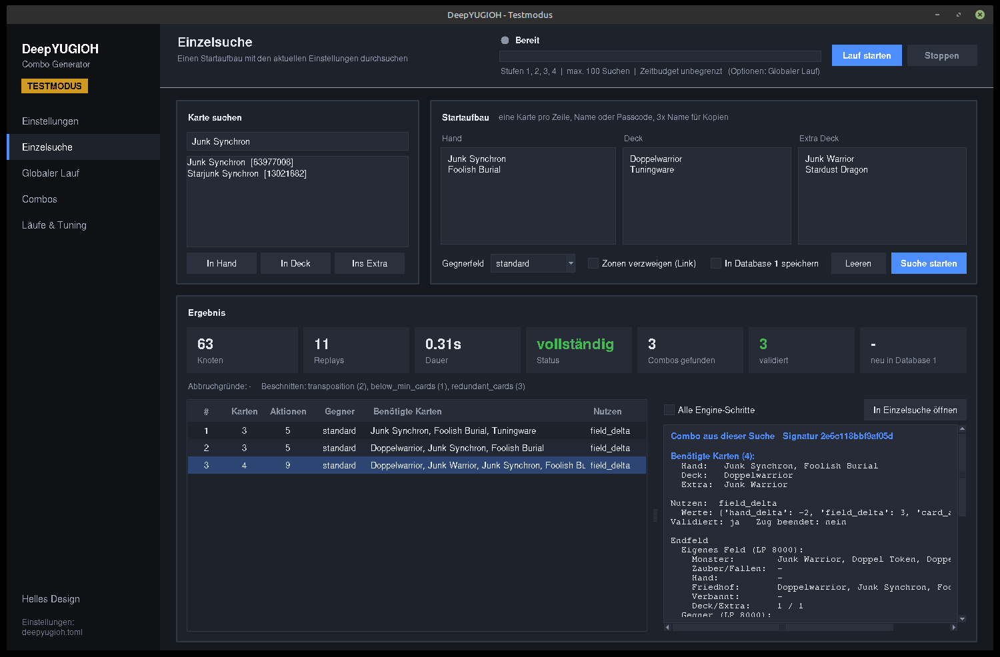
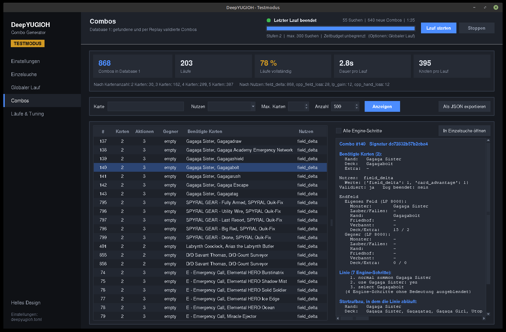
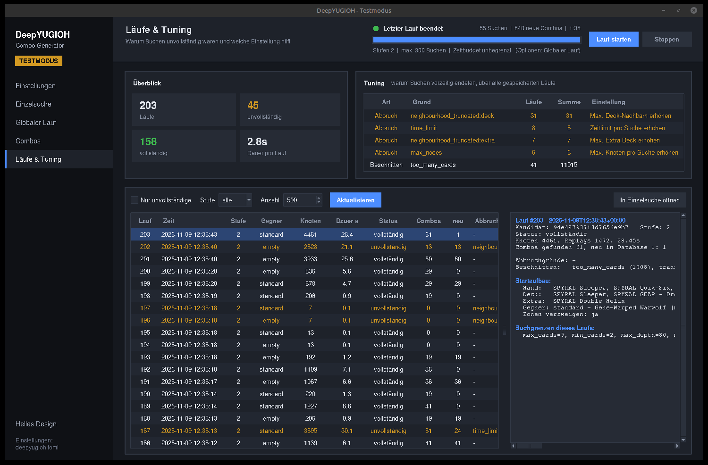

DeepYUGIOH Softwaredokumentation
Aufbau, Bedienung und Konfiguration von Phase 1, dem Combo Generator, einschließlich der Test-GUI zum Feintuning und Auslesen der Ergebnisse.

1. Überblick
DeepYUGIOH ist ein Forschungssystem, das selbstständig Yu-Gi-Oh!-Kartenkombinationen entdecken, bewerten und später zu Decks zusammensetzen soll. Das Projekt ist in unabhängige Stufen geteilt. Diese Dokumentation beschreibt Phase 1, den Combo Generator: Er erzeugt aus dem gesamten Kartenpool Startaufbauten, lässt eine echte Spiel-Engine darin alle Combos suchen und speichert jede validierte Combo in Database 1, dem Combo Repository.
Global
Keine vorgegebenen Starterkarten, Archetypen oder Meta-Decks. Jede Karte darf Teil einer Combo sein.
ALL
Jede gültige Combo wird gespeichert. Der Generator bewertet nicht, wie gut sie ist.
Engine entscheidet
Nur ygopro-core legt fest, ob eine Combo funktioniert. Jede gespeicherte Combo wird per Replay bestätigt.
Fortsetzbar
Die globale Suche läuft über Tage bis Monate und setzt jederzeit am gespeicherten Stand fort.
Weiterführende Dokumente im Repository: konzept.md (Vision und Gesamtarchitektur), combo-generator-spec.md (verbindliche Definitionen) und schnittstellen.md (Verträge des Moduls).
2. Architektur
Das Gesamtsystem trennt das Entdecken von Combos strikt von ihrer Bewertung. Grundsatz: Database 1 speichert, was möglich ist. Database 2 speichert, wie gut es ist. Der Deckbauer entscheidet, was davon zusammengehört.
Module im Code
| Paket | Aufgabe | Wichtige Dateien |
|---|---|---|
deepyugioh.contracts | Verträge zwischen den Modulen: Datentypen und Protokolle. Module kennen einander nur hierüber. | cards.py, setups.py, combos.py, effects.py (Effect Signatures) |
deepyugioh.cards | Card Knowledge System, Schritte 1–3: Import der Kartendaten (BabelCDB) und Skripte (CardScripts), statische Skriptanalyse, Interaktionsgraph mit Helferrollen. | importer.py, effects.py, references.py, graph.py, store.py, lua.py und signatures.py (Effect Signatures) |
deepyugioh.engine | ctypes-Anbindung an ygopro-core (API 11): Duell erzeugen, Nachrichten lesen, Antworten senden, Spielzustand abfragen. | ocg.py, duel.py, messages.py, constants.py |
deepyugioh.generator | Combo Generator, Schritte 4–5: Startaufbauten, Tiefensuche, Nutzenmessung, Validierung, fortsetzbare parallele Läufe. | service.py, candidates.py, config.py, jobs.py, search/*, aide/* (AIDE, Stufen 5–7) |
deepyugioh.benchmark | Vergleich der Stufen 1–4 mit AIDE und der Hybridstufe auf einer festen Kartenmenge. | benchmark.py |
deepyugioh.repository | Database 1 (SQLite), implementiert ComboSink und ComboReader. | combo_db.py |
deepyugioh.settings | Dauerhafte lokale Einstellungen (deepyugioh.toml), Testmodus, GUI-Design. | settings.py |
deepyugioh.gui | Test-GUI (tkinter), nur im Testmodus. | app.py, theme.py, format.py |
deepyugioh.cli | Kommandozeile, eine dünne Schicht über den Modulschnittstellen. | cli.py |
Fremdkomponenten liegen als Git-Submodule unter third_party/: ygopro-core (Engine), CardScripts (Lua-Kartenskripte) und BabelCDB (Kartendaten). Ihre Commits werden zu jedem Lauf gespeichert.
3. Einrichtung
Voraussetzungen: Linux, gcc/g++ mit C++17, ninja und uv. Die Test-GUI braucht zusätzlich eine grafische Sitzung (X11).
git submodule update --init --recursive # Engine, Kartenskripte, Kartendatenbank
uv sync # Python-Umgebung inklusive meson
scripts/build_core.sh # baut build/ocgcore/libocgcore.so
uv run deepyugioh import-cards # Schritte 1-3: Karten, Effekte, Interaktionsgraph
uv run pytest # Tests gegen die echte Engineimport-cards liest alle Karten, analysiert ihre Skripte und baut den Interaktionsgraphen. Danach liegen die Daten in data/cards.sqlite. Der Befehl muss erneut laufen, wenn die Submodule aktualisiert werden. Dabei ändert sich die Graph-Version und damit die Reihenfolge der Kandidaten (siehe Bekannte Grenzen).
4. Arbeitsweise des Generators
- Karten importieren. Kartendaten aus BabelCDB und Lua-Skripte aus CardScripts werden in
data/cards.sqlitegeladen. Alternative Artworks werden erkannt. - Effekte analysieren. Die Skripte werden statisch ausgewertet: Kategorien, Effekttyp, Ereignis, Bereich und Einmal-pro-Zug-Grenzen je Effekt, außerdem genannte Karten, Archetypen und einfache Filter (Level, Typ, Attribut). Das sind nur Hinweise für die Kandidatenauswahl.
- Interaktionen finden. Aus „was eine Karte bewirkt“ (Friedhof, Hand, Spezialbeschwörung, Verbannen) und „worauf eine Karte reagiert“ entsteht ein Graph. Jede Interaktion bekommt eine Stufe:
NAMED,RESTRICTED,CONSTRAINEDoderGENERIC. - Startaufbauten erzeugen. Aus einer oder zwei Kernkarten wird ein konkreter Spielzustand gebaut (Hand, Deck, Extra Deck, Gegnerfeld).
- Erschöpfend suchen. Eine Tiefensuche probiert jede Antwort aus, die die Engine anbietet. An jedem Endzustand wird der Nutzen gemessen. Verzweigt wird derzeit per Replay: Für eine Alternative wird ein frisches Duell erzeugt und der Weg dorthin erneut abgespielt.
- Validieren und speichern. Jede gefundene Linie wird in einem neuen Duell nachgespielt. Nur wenn der Endzustand exakt übereinstimmt, kommt die Combo in Database 1, zusammen mit dem Lauf und seiner Herkunft.
Was ist eine Combo?
Eine Combo ist eine Folge von Aktionen von Spieler 0 in einem Zug, die
- höchstens
max_cards(Standard 5) und mindestensmin_cards(Standard 2) bestimmte Karten benötigt, - in mindestens einem Kriterium einen positiven Nutzen hat und
- keine überflüssigen Karten enthält. Erreicht eine echte Teilmenge ihrer Karten denselben Nutzen, ist sie keine eigene Combo (
drop_redundant).
Benötigte Karten sind benutzte Handkarten, Karten aus dem Deck (gesucht, geschickt oder beschworen, aber nicht gezogen) und Karten aus dem Extra Deck. Tokens und Gegnerkarten zählen nicht.
| Nutzenkriterium | Bedeutung |
|---|---|
lp_gain | eigene LP gewonnen |
opp_lp_loss | Schaden beim Gegner |
hand_delta | mehr Handkarten als zu Beginn |
field_delta | mehr eigene Feldkarten (Monster- und Zauber-/Fallenzonen) |
opp_field_loss | gegnerische Feldkarten entfernt (braucht ein Gegnerfeld) |
opp_hand_loss | gegnerische Handkarten entfernt |
wins | Duell gewonnen |
card_advantage (Hand plus Feld) wird mitgespeichert, ist aber kein eigenes Kriterium. Die Identität einer Combo (signature) bilden die benötigten Karten, die eigene Seite des Endzustands und die Veränderung der Gegnerseite. Wird dieselbe Combo erneut gefunden, wird nur der neue Lauf mit ihr verknüpft.
Startaufbauten
Ein Startaufbau legt fest, welche Karten Spieler 0 in Hand, Deck und Extra Deck hat und was der Gegner besitzt. Für jeden Startaufbau gilt: Master Rule 5, 8000 LP, Beginn in Main Phase 1 von Zug 1 ohne Ziehung, fester Seed. Der Gegner handelt nie.
| Bereich | Inhalt bei einem generierten Kandidaten |
|---|---|
| Hand | Kernkarten, generische Helfer für ihre Bedürfnisse (z. B. Foolish Burial, wenn eine Karte im Friedhof wirkt), bei Extra-Deck-Kernkarten die namentlich genannten Materialien |
| Deck | zweite Kopie jeder Kernkarte sowie Karten, die die Kernkarten holen können (bis max_deck_neighbors) |
| Extra Deck | verwandte Extra-Deck-Monster, namentlich genannte zuerst (bis max_extra) |
| Gegner | eines der Gegnerfelder; jeder Kandidat wird gegen jedes ausgewählte Feld gesucht |
Helferrollen: SEND_GY_FROM_DECK (Foolish Burial), SPSUMMON_FROM_GY (Monster Reborn) und BANISH_FROM_GY (Soul Release). Pro Rolle wird der generische Zauber mit dem kürzesten Skript als Vertreter gewählt. Ob Helfer ergänzt werden, steuert enablers.
Stufen
Alle Stufen zusammen bilden den vollständigen Suchraum. Die Stufe legt nur fest, was zuerst durchsucht wird. Kandidatenzahlen bei zwei Gegnerfeldern:
| Stufe | Kernkarten | Kandidaten | Grobe Dauer (4 Worker) |
|---|---|---|---|
| 1 | jede Startkarte allein (13.521) | 27.042 | Stunden |
| 2 | NAMED/RESTRICTED-Paare: eine Karte nennt die andere oder ihren Archetyp | 133.164 | etwa 1 Tag |
| 3 | CONSTRAINED-Paare: generischer Effekt mit Filter, z. B. Level ≤ 2 | 1.502.412 | Wochen |
| 4 | GENERIC-Paare: „irgendein Monster“ | 9.810.700 | Monate |
| 5 | AIDE vorwärts: mehrstufige Pläne aus jeder Startkarte (Abschnitt 11) | erst nach der Planung bekannt | – |
| 6 | AIDE rückwärts: Pläne, die eine Karte dorthin bringen, wo ihr Effekt wirkt | erst nach der Planung bekannt | – |
| 7 | HYBRID: Stufen 1–4 in unveränderter Reihenfolge, abwechselnd mit AIDE-Plänen | Summe aus 1–6 | – |
Die Stufen 5 bis 7 sind optional. Standard bleiben die Stufen 1 bis 4, und deren Ergebnisse sind unverändert (siehe Einbindung und Sicherheit).
Suchgrenzen und Pruning
Innerhalb der Grenzen ist die Suche erschöpfend. Jede überschrittene Grenze wird im Lauf als Abbruchgrund gespeichert (runs.incomplete). Ein Lauf ist nur dann vollständig, wenn keine Grenze erreicht wurde. Diese Abbruchgründe sind das wichtigste Werkzeug zum Feintuning, siehe Läufe & Tuning.
| Abbruchgrund | Ursache | Zuständige Einstellung |
|---|---|---|
max_nodes | zu viele Entscheidungspunkte in einer Suche | Max. Knoten pro Suche |
time_limit | Zeitlimit des Startaufbaus erreicht | Zeitlimit pro Suche |
max_depth | eine Linie wurde zu lang | Max. Entscheidungen pro Linie |
choices_truncated | Kartenauswahl mit mehr Optionen als erlaubt | Max. Optionen pro Kartenauswahl |
neighbourhood_truncated:deck | Deck-Nachbarschaft gekappt | Max. Deck-Nachbarn |
neighbourhood_truncated:extra | Extra Deck gekappt | Max. Extra Deck |
validation_failed | Replay ergab einen anderen Endzustand | keine; Kartenskript prüfen |
engine_rejected_response | Engine lehnte eine Antwort ab | keine; Fehler im Generator |
unsupported:*, unsupported_opponent:* | nicht unterstützte Entscheidung, z. B. Karte ansagen | keine |
Die Pruning-Regeln verkleinern den Suchraum anhand dokumentierter Annahmen und erscheinen in der Statistik als „Beschnitten“: Transpositionen (gleicher Zustand über verschiedene Wege), zu viele Karten (too_many_cards, das ist eine Definition und kein Abbruch), zu wenige Karten (below_min_cards) und redundante Karten (redundant_cards). Außerdem gilt: Zonen werden nur bei Link-Monstern verzweigt, die Kampfposition ist offene Angriffsposition, Setzen wird nur mit allow_mset/allow_sset probiert und gleiche Kopien zählen als eine Wahl. Die vollständige Liste steht in combo-generator-spec.md, Abschnitt 4.
5. Einstellungen
Quellen und Vorrang
Alle Einstellungen des Generators stehen in einer TOML-Datei. Das Format ist das von deepyugioh.example.toml. Fehlende Schlüssel bekommen ihre Standardwerte, unbekannte Schlüssel in [limits] oder [candidates] führen zu einem Fehler.
| Rang | Quelle | Gilt für |
|---|---|---|
| 1 | CLI-Optionen wie --max-cards, --workers, --tiers | nur diesen Aufruf |
| 2 | --config DATEI.toml | ersetzt für diesen Aufruf die dauerhaften Einstellungen vollständig (keine Mischung) |
| 3 | deepyugioh.toml im Projektordner (nicht versioniert, Pfad per DEEPYUGIOH_SETTINGS änderbar) | alle CLI-Befehle ohne --config und die Test-GUI |
| 4 | eingebaute Standardwerte | alles, was nirgends gesetzt ist |
In der Test-GUI verwenden Einzelsuche und globaler Lauf immer die Werte im Formular, auch ungespeicherte. Erst Speichern schreibt sie nach deepyugioh.toml. Dann nutzt auch die CLI sie. Ungültige Werte (z. B. Min. Karten größer als Max. Karten) werden beim Speichern und beim Start einer Suche abgelehnt.
Die Spalte Bereich nennt die Grenzen, die das GUI-Formular erlaubt. Die Datei selbst prüft nur auf Widersprüche (GeneratorConfig.check()).
Suchgrenzen [limits] (pro Startaufbau)
| Schlüssel | GUI-Feld | CLI | Standard | Bereich | Wirkung |
|---|---|---|---|---|---|
max_cards | Max. Karten pro Combo | --max-cards | 5 | 1–60 | Wie viele bestimmte Karten eine Combo höchstens braucht. Höhere Werte (6, 7 …) finden längere Combos, vergrößern den Suchraum aber stark. |
min_cards | Min. Karten pro Combo | --min-cards | 2 | 1–60 | Darunter gilt ein Fund als Effekt einer einzelnen Karte und wird verworfen. |
max_depth | Max. Entscheidungen pro Linie | --max-depth | 80 | 1–100.000 | Länge einer einzelnen Linie in Engine-Entscheidungen. |
max_nodes | Max. Knoten pro Suche | --max-nodes | 20.000 | 1–10⁹ | Entscheidungspunkte, die eine Suche höchstens expandiert. |
time_limit | Zeitlimit pro Suche (s) | --time-limit | 120 | 0,1–604.800 | Sekunden pro Startaufbau. |
max_choices | Max. Optionen pro Kartenauswahl | – | 128 | 1–10⁶ | Mehr Optionen werden abgeschnitten, der Lauf gilt dann als unvollständig. |
transpositions | Transpositionen erkennen | – | an | an/aus | Gleiche Spielstände über verschiedene Wege nur einmal durchsuchen. Ausschalten nur zur Fehlersuche, es kostet viel Zeit. |
drop_redundant | Redundante Combos verwerfen | – | an | an/aus | Combos verwerfen, deren Nutzen eine echte Teilmenge ihrer Karten bereits erreicht. |
allow_mset | Monster setzen durchsuchen | --allow-set (beide) | aus | an/aus | Verzweigt zusätzlich über verdecktes Setzen von Monstern. |
allow_sset | Zauber/Fallen setzen durchsuchen | aus | an/aus | Verzweigt zusätzlich über Setzen von Zaubern und Fallen. |
Startaufbauten [candidates] (globale Suche)
| Schlüssel | GUI-Feld | CLI | Standard | Bereich | Wirkung |
|---|---|---|---|---|---|
tiers | Stufen | generate --tiers | [1, 2, 3, 4] | 1–7 | Welche Stufen ein Lauf bearbeitet und in welcher Reihenfolge. Auf der GUI-Seite „Globaler Lauf“ lässt sich das pro Lauf überschreiben. |
opponent_boards | Gegnerfelder | – | ["empty", "standard"] | definierte Felder | Gegen welche Gegnerfelder jeder Kandidat gesucht wird. Jedes Feld verdoppelt die Kandidatenzahl. |
max_deck_neighbors | Max. Deck-Nachbarn | – | 15 | 0–200 | Karten aus der Interaktions-Nachbarschaft im Deck. Wird gekappt, ist der Lauf unvollständig. |
max_extra | Max. Extra Deck | – | 15 | 0–200 | Größe des Extra Decks im Startaufbau (im echten Spiel 15). |
enablers | Hilfskarten ergänzen | – | an | an/aus | Generische Helfer (Foolish Burial, Monster Reborn, Soul Release) ergänzen, wenn Karten sie brauchen. |
aide_share | Anteil AIDE in Stufe 7 | – | 0.5 | 0,05–0,95 | Anteil der Suchen, die in der Hybridstufe an AIDE-Pläne gehen. |
aide_plans_per_card | Pläne pro Karte | – | 6 | 1–100 | So viele Pläne behält der Planer pro Start- bzw. Zielkarte (die besten nach Zahl der Verknüpfungen). |
aide_branching | Verzweigung pro Effekt | – | 4 | 1–50 | So viele Karten probiert der Planer für jede Bewegung eines Effekts aus (z. B. welche Karte Foolish Burial schickt). |
aide_neighbors | Zusätzliche Deck-Nachbarn | – | 0 | 0–200 | Weitere Karten aus der Interaktions-Nachbarschaft im Startaufbau eines Plans. |
aide_helpers | Hilfskarten ergänzen (AIDE) | – | aus | an/aus | Dieselben Helfer wie in den Stufen 1–4 auch in AIDE-Aufbauten. Im Benchmark langsamer und mit weniger Combos, daher standardmäßig aus. |
Ausführung (oberste Ebene)
| Schlüssel | GUI-Feld | CLI | Standard | Wirkung |
|---|---|---|---|---|
workers | Parallele Prozesse | generate --workers | 1 | Worker-Prozesse eines globalen Laufs. Einzelsuchen laufen immer in einem Prozess. Sinnvoll ist etwa die Zahl der Kerne. |
validate | Combos per Replay validieren | – | an | Jede Linie wird in einem frischen Duell nachgespielt. Database 1 speichert nur validierte Combos; ohne Validierung wird also nichts gespeichert. |
Gegnerfelder [opponent_boards.NAME]
Gegnerfelder bestehen nur aus Normalen Monstern und Normalen Zaubern, damit der Gegner in unserem Zug nie etwas aktivieren kann. Eigene Felder werden in der Datei definiert. In der GUI wird nur ausgewählt, welche verwendet werden.
[opponent_boards.wall]
cards = [
{ card = "Mystical Elf", zone = "mzone", position = "faceup_defense" },
{ card = "Pot of Greed", zone = "szone", position = "facedown" },
{ card = "Mystical Elf", zone = "hand" },
]
[candidates]
opponent_boards = ["empty", "standard", "wall"]| Feld | Werte |
|---|---|
card | englischer Kartenname oder Passcode |
zone | mzone (Standard), szone, hand |
position | faceup_attack (Standard), faceup_defense, facedown_defense, facedown |
Mitgeliefert: empty (nichts) und standard (Gene-Warped Warwolf offen, Pot of Greed gesetzt, zweimal Mystical Elf auf der Hand).
Testmodus, Design und Umgebungsvariablen
| Einstellung | Standard | Bedeutung |
|---|---|---|
test_mode (oberste Ebene) | false | Schaltet Entwicklerwerkzeuge wie die Test-GUI frei. Setzen mit deepyugioh testmode on|off. |
[gui] theme | "dark" | Design der GUI, "dark" oder "light". Wird beim Umschalten in der GUI gespeichert. |
[gui.run] mode | "target" | Ende des globalen Laufs in der GUI: target, max_jobs, time_budget oder unlimited. Wird beim Start eines Laufs gespeichert. |
[gui.run] target / benefit | 100 / "" | Ziel-Combos und der Nutzen, der gezählt wird ("" = jede neue Combo, sonst z. B. "wins"). |
[gui.run] max_jobs / time_budget | 100 / 3600 | Werte der Modi Anzahl Suchen und Zeitbudget (Sekunden). |
DEEPYUGIOH_TEST_MODE | – | 1/0 (auch true/false, on/off) überschreibt test_mode. |
DEEPYUGIOH_SETTINGS | – | anderer Pfad für die Einstellungsdatei |
DEEPYUGIOH_OCGCORE | – | anderer Pfad zu libocgcore.so |
Die Datei wird atomar geschrieben. Beim Speichern aus der GUI bleiben test_mode und [gui] erhalten, ersetzt wird nur der Generator-Teil.
6. Kommandozeile
Alle Befehle laufen mit uv run deepyugioh BEFEHL. Karten können per englischem Namen oder Passcode angegeben werden.
| Befehl | Zweck | Wichtige Optionen |
|---|---|---|
import-cards | Schritte 1–3: Karten importieren, Skripte analysieren, Interaktionsgraph bauen | – |
plan | Stufen, Kandidatenzahlen und Abdeckung der globalen Suche | Suchgrenzen-Optionen, --config |
generate | globale Suche starten oder fortsetzen | --tiers, --target N (bis N neue Combos), --benefit (nur Combos mit diesem Nutzen zählen, z. B. wins), --max-jobs, --time-budget (s), --workers, --report-every (50) |
search | einen Startaufbau durchsuchen | --hand (Pflicht), --deck, --extra, --opponent (empty), --branch-zones, --show (10), --lines, --no-store |
combos | Database 1 abfragen | --card, --positive, --max-cards, --limit (50), --lines |
aide | AIDE: Effect Signatures bauen und anzeigen, Pläne für eine Karte, Status der Hypothesen | build, stats, explain --card, plan --card, report [--status VALIDATED] |
benchmark | Stufen 1–4, AIDE und Hybrid auf einer festen Kartenmenge vergleichen (eigene Datenbanken, Database 1 bleibt unberührt) | --budget (Suchen oder Sekunden mit s, Standard 300s), --workers, --variants, --out |
testmode | Testmodus anzeigen oder umschalten | on / off |
gui | Test-GUI starten (nur im Testmodus) | – |
Bei generate endet der Lauf an der ersten erreichten Grenze. Ist nur --target gesetzt, gibt es keine Zeitgrenze für den Lauf. Er endet dann erst, wenn das Ziel erreicht ist oder alle Kandidaten der Stufen bearbeitet sind.
Suchgrenzen-Optionen für plan, generate und search: --config, --max-cards, --min-cards, --max-depth, --max-nodes, --time-limit, --allow-set.
uv run deepyugioh generate --tiers 1 2 --workers 8 --time-budget 3600
uv run deepyugioh generate --tiers 1 2 3 --workers 8 --target 100 --benefit wins # bis 100 neue Sieg-Combos
uv run deepyugioh search --hand "Junk Synchron" "Foolish Burial" \
--deck Doppelwarrior Tuningware --extra "Junk Warrior" "Stardust Dragon" \
--opponent standard --lines
uv run deepyugioh combos --positive opp_field_loss --lines
uv run deepyugioh aide plan --card "Junk Converter" # AIDE-Pläne einer Karte
uv run deepyugioh generate --tiers 7 --workers 8 --time-budget 3600 # Hybridlauf
uv run deepyugioh benchmark --budget 300s --workers 77. Test-GUI
Die Test-GUI dient dem Feintuning des Generators und dem Auslesen der Ergebnisse. Sie bündelt alles, was sonst über mehrere CLI-Befehle verteilt ist: Einstellungen, Einzelsuchen, globale Läufe, Database 1 und die Auswertung der Abbruchgründe.
Starten
uv run deepyugioh testmode on # Testmodus dauerhaft einschalten
uv run deepyugioh gui
uv run deepyugioh testmode off # wieder ausschaltenOhne aktiven Testmodus bricht deepyugioh gui mit einem Hinweis ab. Für einen einzelnen Start reicht DEEPYUGIOH_TEST_MODE=1 uv run deepyugioh gui.
Aufbau
Seitenleiste
Navigation zwischen den fünf Seiten, unten der Wechsel zwischen dunklem und hellem Design und der Pfad der Einstellungsdatei.
Kopfleiste
Auf jeder Seite sichtbar: Seitentitel, Status des globalen Laufs (Punkt und Text), Fortschrittsbalken, Live-Kennzahlen, Lauf starten und Stoppen.
Statuszeile
Ganz unten: Rückmeldung zur letzten Aktion, z. B. „Einstellungen gespeichert“ oder die Dauer einer Suche.
Der Status in der Kopfleiste zeigt Bereit (grau), Globaler Lauf läuft bzw. Einzelsuche läuft (blau), Stoppt (orange) und Letzter Lauf beendet (grün). Der Fortschrittsbalken zeigt den Weg zum Laufende: Ziel-Combos, Anzahl Suchen oder Zeitbudget. Endet der Lauf erst, wenn alle Kandidaten bearbeitet sind, läuft er als Animation. Im Zielmodus steht der Stand zusätzlich als „Ziel 26/60“ neben dem Status. Ein Klick auf die Zeile mit den Laufoptionen öffnet die Seite „Globaler Lauf“.

Es läuft immer nur eine Suche gleichzeitig: Während einer Einzelsuche ist „Lauf starten“ gesperrt und umgekehrt. Engine-Arbeit läuft im Hintergrund, die Oberfläche bleibt bedienbar.
Seite Einstellungen

- Speichern prüft die Werte und schreibt sie nach
deepyugioh.toml. - Verwerfen lädt die gespeicherten Werte neu.
- Standardwerte trägt die eingebauten Standardwerte ein, ohne zu speichern. Selbst definierte Gegnerfelder bleiben erhalten.
- Geänderte, noch nicht gespeicherte Werte zeigt der Hinweis Ungespeicherte Änderungen. Beim Schließen mit ungespeicherten Änderungen fragt die GUI nach.
Seite Einzelsuche

- Karte suchen: ab zwei Zeichen erscheinen passende Namen, genaue Treffer zuerst. Mit In Hand, In Deck, Ins Extra (oder Doppelklick für die Hand) wird die Karte übernommen.
- Startaufbau: eine Karte pro Zeile, Name oder Passcode.
3x Namefügt drei Kopien ein. Unbekannte Namen werden mit Vorschlägen gemeldet. - Optionen: Gegnerfeld, Zonen verzweigen (nötig für Link-Monster), In Database 1 speichern (aus: reine Probe, nichts wird gespeichert).
- Ergebnis: Kacheln für Knoten, Replays, Dauer, Status, gefundene und validierte Combos und neue Einträge in Database 1. Darunter stehen Abbruchgründe mit der zuständigen Einstellung und die Beschneidung.
- Combo-Liste und Details: benötigte Karten nach Herkunft, Nutzenwerte, Endfeld beider Spieler, die Linie Schritt für Schritt und der Startaufbau. Alle Engine-Schritte blendet auch technische Schritte ein (Zonenwahl, Position, „keine Kette“).
Die Einzelsuche verwendet die Werte des Einstellungsformulars. So lässt sich eine Grenze ändern und derselbe Aufbau sofort erneut durchsuchen.
Seite Globaler Lauf
- Laufoptionen: Stufen für diesen Lauf (vorbelegt aus den Einstellungen) und Lauf endet bei:
- Ziel-Combos erreicht (Standard, 100): Der Lauf hat keine Zeitgrenze. Er sucht, bis so viele neue Combos in Database 1 stehen. Mit zählen lassen sich nur Combos mit einem bestimmten Nutzen zählen: Sieg (Duell gewonnen), Schaden am Gegner, Gegner verliert Feld- bzw. Handkarten, mehr eigene Feld- bzw. Handkarten oder eigene LP gewonnen. Alle übrigen Combos werden trotzdem gespeichert, sie zählen nur nicht zum Ziel.
- Anzahl Suchen: endet nach so vielen Startaufbauten.
- Zeitbudget: endet nach so vielen Sekunden.
- alle Kandidaten bearbeitet: keine Grenze.
[gui.run]gespeichert. - Ziel überschritten: Ist das Ziel erreicht, starten keine neuen Suchen mehr. Noch wartende Suchen werden verworfen und beim nächsten Lauf nachgeholt. Suchen, die schon laufen, werden aber fertig und gespeichert. Mit mehreren Prozessen und ergiebigen Kandidaten liegt das Ergebnis deshalb oft über dem Ziel, z. B. 109 statt 60.
- Lauf starten setzt immer am gespeicherten Stand fort. Bereits erledigte Kandidaten werden übersprungen.
- Stoppen startet keine neuen Suchen mehr. Laufende Suchen werden noch beendet und gespeichert, damit der nächste Lauf lückenlos fortsetzt. Das Gleiche passiert beim Schließen des Fensters während eines Laufs.
- Aktueller Lauf: Suchen, vollständig, unvollständig, Fehler, gefundene Combos, neue Combos in Database 1, Stand des Ziels (z. B. 26/60, grün wenn erreicht), Suchen pro Minute und Laufzeit, jede Sekunde aktualisiert.
- Abdeckung: pro Stufe die Zahl der Kandidaten, wie viele erledigt sind (absolut und in Prozent) und deren Ergebnis. Grundlage sind die Kandidaten-Einstellungen im Formular. Nach jedem Lauf wird sie aktualisiert.
- Protokoll: Start und Ende eines Laufs (blau, mit Grund des Endes), Suchen mit neuen Combos (grün, im Zielmodus mit Zielstand), Fehler (rot) und jede 25. Suche. Dazu ein Hinweis, ob das Ziel erreicht wurde. Es behält die letzten 3000 Zeilen.
Wichtig für das Tuning: Ein globaler Lauf durchsucht keinen Kandidaten zweimal. Neue Suchgrenzen oder Kandidaten-Einstellungen wirken nur auf Kandidaten, die noch nicht bearbeitet wurden. Zum Vergleichen von Einstellungen dient deshalb die Einzelsuche (siehe Feintuning). Soll eine Stufe mit neuen Grenzen komplett neu durchsucht werden, muss data/generator.sqlite vorher beiseitegelegt werden. Database 1 bleibt davon unberührt, bekannte Combos werden nur verknüpft.
Seite Combos (Database 1)

- Kennzahlen: Combos, Läufe, Anteil vollständiger Läufe, durchschnittliche Dauer und Knotenzahl; darunter die Verteilung nach Kartenanzahl und nach Nutzen.
- Filter: Karte (Name oder Passcode, Enter startet), Nutzenkriterium, Max. Karten und Anzahl. Sortiert wird nach Kartenzahl, dann Linienlänge.
- Details: wie bei der Einzelsuche, zusätzlich alle Läufe, in denen die Combo gefunden wurde.
- In Einzelsuche öffnen überträgt den Startaufbau der Combo in die Einzelsuche.
- Als JSON exportieren speichert die angezeigte Liste mit Kartennamen, Nutzen, lesbarer Linie, Endfeld und Startaufbau.
- Ein Klick auf eine Spaltenüberschrift sortiert die Tabelle, ein zweiter kehrt die Reihenfolge um. Das gilt für alle Tabellen der GUI.
Seite Läufe & Tuning

- Überblick: Läufe, davon unvollständig und vollständig, durchschnittliche Dauer.
- Tuning: alle Abbruchgründe über alle gespeicherten Läufe, mit Zahl der betroffenen Läufe, Summe und zuständiger Einstellung, sortiert nach Häufigkeit. Darunter steht die Beschneidung durch Pruning-Regeln.
- Laufliste: die neuesten Läufe zuerst, filterbar nach „nur unvollständige“, Stufe und Anzahl.
- Laufdetails: Kandidat, Status, Knoten, Abbruchgründe mit Hinweis, Startaufbau und die Grenzen, mit denen dieser Lauf gesucht wurde.
- In Einzelsuche öffnen überträgt den Startaufbau des Laufs, um ihn mit anderen Grenzen erneut zu durchsuchen.
Feintuning Schritt für Schritt
- Probelauf. Auf „Globaler Lauf“ eine Stufe mit z. B. 200 Suchen laufen lassen.
- Abbruchgründe lesen. Auf „Läufe & Tuning“ zeigt die Tuning-Tabelle, welche Grenze am häufigsten greift, z. B.
neighbourhood_truncated:deck. - Einzelfall prüfen. „Nur unvollständige“ aktivieren, einen Lauf wählen und In Einzelsuche öffnen.
- Grenze ändern und vergleichen. Die zuständige Einstellung erhöhen. Die Einzelsuche mit ausgeschaltetem „In Database 1 speichern“ erneut starten und Status, Dauer und Combos mit dem ursprünglichen Lauf vergleichen.
- Abwägen. Höhere Grenzen finden mehr, kosten aber Zeit pro Startaufbau und damit Wochen bei Stufe 3 und 4. Lohnt sich der Gewinn, die Werte speichern. Danach verwenden Folgeläufe und die CLI sie.
Als Faustregel: max_cards (z. B. 5 → 6) vergrößert den Suchraum am stärksten. time_limit und max_nodes betreffen nur große Startaufbauten. Die Nachbarschaftsgrenzen ändern, welche Karten überhaupt im Startaufbau liegen.
8. Datenhaltung
Alle erzeugten Daten liegen in data/ und sind nicht versioniert.
| Datei | Inhalt | Erzeugt von |
|---|---|---|
cards.sqlite | Karten, analysierte Effekte, Referenzen, Interaktionsgraph und Effect Signatures (effect_signatures, signature_meta) | import-cards; die Signaturen auch aide build oder automatisch beim ersten Einsatz von AIDE (etwa 20 s) |
combos.sqlite | Database 1: Combos und Läufe | Generator über ComboSink |
generator.sqlite | Fortschritt der globalen Suche: erledigte Kandidaten und Cursor pro Stufe | Generator (JobStore) |
aide.sqlite | Kandidaten-Pool von AIDE: Pläne (Hypothesen) mit Status, Herkunft und Startaufbauten, abgelehnte Rückwärts-Ansätze, Plan-Cache pro Wurzelkarte | AIDE (HypothesisStore) |
analysis.sqlite | Database 2 (Stufe 2): Bewertungen der Combos pro Achse, Combo-Familien; siehe stufe2-konzept.md | analyze |
benchmark/<Zeit>/ | Benchmark-Bericht (benchmark.md, benchmark.json) und je Variante eigene Datenbanken | benchmark |
Database 1 (combos.sqlite)
| Tabelle | Inhalt |
|---|---|
runs | ein Eintrag pro Suche: Startaufbau, Gegnerfeld, Grenzen, Knoten, Replays, Dauer, complete, Abbruchgründe, Beschneidung, gefundene und neue Combos, Commits von Engine, Skripten und Kartendaten, Graph-Version |
combos | eine Zeile pro Combo-Identität (signature): benötigte Karten, Nutzen, Endfeld, Linie, Startaufbau, Erstfund |
combo_cards | Index: welche Karte in welcher Rolle (Hand, Deck, Extra) mit wie vielen Kopien |
combo_benefits | Index: positive Nutzenkriterien je Combo |
combo_runs | in welchen Läufen eine Combo gefunden wurde |
meta | schema_version; eine Datenbank mit anderer Version wird nicht geöffnet (SchemaMismatch) |
Fortsetzen (generator.sqlite)
Jede Stufe wird in fester Reihenfolge abgearbeitet. Ein Cursor pro Stufe und Graph-Version merkt sich, bis wohin alles erledigt ist. Weil parallele Worker in unterschiedlicher Reihenfolge fertig werden, werden Jobs hinter dem Cursor einzeln in jobs gespeichert und beim Fortsetzen übersprungen. Fehler in einem Kartenskript brechen den Lauf nicht ab, der Job wird mit status = error gespeichert.
9. Schnittstellen
Der Generator hängt nur von den Verträgen in deepyugioh.contracts ab. Was in deepyugioh.generator.__all__ und deepyugioh.contracts steht, ist Schnittstelle; alles andere ist intern. Die vollständige Beschreibung steht in schnittstellen.md.
from deepyugioh.generator import ComboGenerator, GeneratorConfig
from deepyugioh import settings
gen = ComboGenerator(pool, sink, settings.generator_config(), graph=graph, pool_factory=CardStore)
gen.search(setup) # ein Startaufbau -> SearchReport
gen.run(tiers=[1, 2], max_jobs=10_000, # global, fortsetzbar, parallel
time_budget=3600, progress=listener,
should_stop=event.is_set) # z. B. Stopp-Knopf
gen.run(target_combos=100, target_benefit="wins") # bis 100 neue Sieg-Combos, ohne Zeitgrenze
gen.coverage() # Abdeckung pro Stufe| Vertrag | Richtung | Implementierung |
|---|---|---|
CardPool | Kartendaten → Generator | cards.store.CardStore |
InteractionGraph | Graph → Startaufbau-Generator | cards.graph.CardGraph |
CandidateSource | austauschbarer Startaufbau-Generator | generator.candidates.GraphCandidateSource |
ComboSink | Generator → Database 1 | repository.combo_db.ComboRepository |
ComboReader | Database 1 → Analyzer (Phase 2) | repository.combo_db.ComboRepository |
ProgressListener | Generator → Fortschrittsanzeige (CLI, GUI) | on_job(JobReport) |
EffectKnowledge | Effect Signatures → AIDE | cards.signatures.SignatureStore |
CandidateSource.tier_version (optional) | Cursor-Schlüssel pro Stufe | generator.aide.source.HybridCandidateSource |
10. GUI-Technik und Vorlage für weitere Stufen
Die GUI des Combo Generators ist das Vorbild für die GUIs der folgenden Stufen (Analyzer, Quality Filter, Deckbau). Dieser Abschnitt beschreibt ihren Aufbau und die Regeln, an die sich weitere GUIs halten sollen, damit alle gleich aussehen und sich gleich bedienen lassen.
Bausteine
| Datei | Inhalt | Wiederverwendbar für weitere Stufen |
|---|---|---|
gui/theme.py | Theme: Farbpaletten (dunkel, hell), Schriften, alle ttk-Stile, Registrierung klassischer Tk-Widgets (Text, Listbox, Canvas, Tabellen-Tags) für den Designwechsel | ja, unverändert |
gui/app.py | Hülle (App, Sidebar, Header), Bausteine (card, Tile, tile_row, make_tree, make_text, set_text, NavItem) und die fünf Seiten | Hülle und Bausteine ja, Seiten sind stufenspezifisch |
gui/format.py | reine Textaufbereitung ohne tkinter (Combo-, Lauf- und Statistiktexte, Export, Tuning-Hinweise); per pytest testbar | Muster ja, Inhalte stufenspezifisch |
settings.py | dauerhafte Einstellungen, Testmodus, Design | ja; neue Stufen bekommen eigene Tabellen in deepyugioh.toml |
Seitenmodell
Jede Seite ist eine Klasse mit frame (Hintergrund Page.TFrame). Seiten mit Datenbankinhalt haben zusätzlich loaded und refresh(): Sie laden beim ersten Öffnen automatisch, danach über ihre Schaltflächen. Seiten werden in PAGES (Schlüssel, Titel, Untertitel) eingetragen; Seitenleiste und Kopfleiste ergeben sich daraus.
Nebenläufigkeit
- Engine-Arbeit läuft über
App.task(label, work, done)in einem Hintergrund-Thread.workläuft im Thread,done(result)im Tk-Hauptthread. Fehler erscheinen als Dialog und in der Statuszeile. exclusive=True(Standard) erlaubt nur eine Aufgabe gleichzeitig. Lesende Nebenaufgaben wie die Abdeckung laufen mitexclusive=False.- Aus anderen Threads wird nur über
App.post(fn, *args)auf die Oberfläche zugegriffen. Eine Queue wird alle 100 ms im Hauptthread abgearbeitet. - SQLite-Verbindungen gehören zu ihrem Thread: Jeder Hintergrund-Thread öffnet eigene
CardStore- und Repository-Instanzen. Die Instanzen inAppsind nur für den Hauptthread. - Lange Läufe haben einen Stopp über
should_stop, der laufende Arbeit sauber zu Ende bringt.
Gestaltungsregeln
- Inhalte stehen in Karten (
card(parent, titel, untertitel)) auf dem Seitenhintergrund, Kennzahlen in Kacheln (Tile). - Farben nur über das Theme: Akzent (Blau) für primäre Aktionen und neue Ergebnisse, Grün für vollständig/erfolgreich, Orange für unvollständig/Warnung, Rot für Fehler und Stoppen.
- Eine primäre Schaltfläche (
Accent.TButton) pro Karte; Stoppen istDanger.TButton. - Tabellen über
make_tree(Streifen, Sortierung), Detailtexte übermake_textundset_text(..., highlight=True). - Klassische Tk-Widgets immer mit
theme.register(widget, art)anmelden, sonst folgen sie dem Designwechsel nicht. - Keine Sonderzeichen wie ∞, → oder … in Beschriftungen: Das Tk der uv-Umgebung nutzt X11-Kernschriften ohne Kantenglättung, denen diese Zeichen fehlen. Statusanzeigen werden gezeichnet (Canvas), nicht als Zeichen geschrieben.
- Jede Entwickler-GUI startet nur im Testmodus (Prüfung in der CLI und in
run_gui()). - Die GUI nutzt nur öffentliche Schnittstellen der Module (z. B.
ComboGenerator,ComboReader), keine Interna.
Sobald eine zweite Stufe eine GUI bekommt, lohnt es sich, Hülle und Bausteine aus gui/app.py in ein gemeinsames Modul (etwa gui/shell.py) zu verschieben, sodass jede Stufe nur ihre Seiten beisteuert.
11. AIDE: algorithmische Suche
AIDE (Algorithmic Interaction Discovery Engine) ergänzt die bisherige Suche um eine zweite Quelle für Startaufbauten. Die Stufen 1 bis 4 bilden Paare aus dem Interaktionsgraphen. AIDE liest dagegen aus den Kartenskripten, was jeder Effekt tut. Daraus plant es mehrstufige Ketten, etwa „Junk Converter wirft Jet Synchron ab und sucht Quickdraw Synchron, Jet Synchron holt sich aus dem Friedhof …“. Jeder Plan ist nur eine Hypothese. Er wird zu einem gewöhnlichen Startaufbau, den die bestehende Suche vollständig durchsucht und per Replay validiert. In Database 1 kommen weiterhin nur Combos, die die Engine gefunden und bestätigt hat.
Leitfrage: Findet das algorithmische Verständnis der Effekte mehr neue, regelkonforme Combos als die reine Simulation, bei gleichem oder geringerem Rechenaufwand? Die Antwort steht im Benchmark.
Ablauf
Effect Signatures
Ein kleiner Lua-Leser (cards/lua.py) findet Funktionen, Blöcke und Aufrufe und zerlegt boolesche Ausdrücke. cards/signatures.py folgt für jeden Effekt den Funktionen, auf die er zeigt (SetCost, SetTarget, SetOperation, SetCondition), und baut daraus eine EffectSignature (contracts/effects.py):
| Feld | Bedeutung | Beispiel |
|---|---|---|
kind, location | Art (ACTIVATE, IGNITION, QUICK, TRIGGER, SUMMON_PROC, CONTINUOUS) und wo die Karte sein muss | Sangan: TRIGGER im Friedhof |
trigger | Ereignis und ob es dieser Karte passieren muss | TO_GRAVE, nur diese Karte, Pflicht |
conditions | erkannte Voraussetzungen, sonst UNKNOWN:<Funktion> | PREVIOUS:MZONE+SZONE |
costs, moves | Bewegungen „Karten mit Bedingung X von Zone A nach Zone B“, als Kosten oder Effekt; what = None heißt „diese Karte“ | Dark Grepher: Kosten „DARK von der Hand ins Grab“, Effekt „DARK vom Deck ins Grab“ |
count_limit | OPT oder HOPT:<Schlüssel> (geteilte Limits über den Schlüssel) | HOPT:id |
unknown, confidence | alles, was nicht sicher gelesen werden konnte, und eine daraus abgeleitete Sicherheit | condition s.spcon, 0.85 |
Filter werden zu Condition-Objekten: eine ODER-Liste von CardFilter-Alternativen, jede ein UND aus Kartentyp, Level, Typ, Attribut, ATK/DEF, Archetypen und Kartennamen. Alternative Wege bleiben dadurch erhalten (IsLevel(1) or IsSetCard(…) ergibt zwei Alternativen). Unbekannte Prädikate schließen nie eine Karte aus, sie stehen nur in unknown. Ein LLM wird nicht verwendet, nichts wird geraten.
13.536 Skripte
in etwa 20 s, ohne einen Extraktionsfehler
20.509 Effekte
aktivierbar; 72 % davon mit konkreter Bewegung oder Ziehen
30 %
mit unbekannten Teilen außerhalb der Bedingungen (58 % mit Bedingungen)
0,82
mittlere Sicherheit
Die meisten unbekannten Teile sind Bedingungsfunktionen. Sie sind so verschieden, dass sie bewusst als UNKNOWN stehen bleiben. deepyugioh aide explain --card NAME zeigt die Signaturen einer Karte.
Index, Regeln, Planer
- Producer/Consumer-Index (
generator/aide/index.py): Ein Producer ist ein Effekt, der Karten in eine Zone bringt. Er ist nach Zielzone und nach genannten Karten bzw. Archetypen indiziert. Ein Consumer ist eine Karte, die in einer Zone einen Effekt nutzen kann. Zuerst stehen Karten, deren Effekt die Kette weiterführt. Gesucht wird per Nachschlagen plus Filterprüfung auf kurzen Listen, nie „jeder gegen jeden“. - Regelprüfung (
constraints.py): Verworfen wird nur, was im ersten Zug sicher unmöglich ist. Dazu gehören Friedhofseffekte mit „nicht in dem Zug, in dem sie gelegt wurde“ (aux.exccon), Kampf- oder Ziehauslöser, Fallen (müssen einen Zug vorher gesetzt werden), Zauber, die beschworen werden sollen, und Extra-Deck-Monster, die auf die Hand sollen. Was unsicher ist, bleibt erlaubt. - Abstrakter Zustand (
planner.py): Pro Karte des Plans ist nur ihre Zone bekannt, dazu die verbrauchten Limits und die Normalbeschwörung. Aktionen sind die Normalbeschwörung (Level 1–4), Effekte einer Karte in passender Zone (Kosten zuerst) und Auslöser der Ereignisse des letzten Schritts. - Vorwärts: von einer Startkarte auf der Hand aus. Braucht ein Effekt eine Karte („1 Krieger vom Deck“), probiert der Planer bis zu
aide_branchingKarten aus. Zuerst genannte, dann verwandte (Name, Archetyp), dann generische Consumer. - Rückwärts: vom Ziel „Karte G wirkt im Friedhof / verbannt / auf dem Feld“ aus. Gesucht wird, welche Producer G dorthin bringen und wie diese selbst aktiviert werden (Hand, Normalbeschwörung, bis zu zwei Ebenen). Der Vorwärtsplaner vervollständigt diesen Ansatz dann; beide Richtungen teilen denselben Zustand.
- Plan: Ein Plan entsteht, wenn eine Aktion eine Verknüpfung nutzt, also eine Karte oder Ressource, die ein anderer Effekt bereitgestellt hat. Er hat 2 bis
max_cardsKarten. Pro Wurzelkarte bleiben dieaide_plans_per_cardPläne mit den meisten Verknüpfungen.
uv run deepyugioh aide plan --card "Junk Converter"
forward plan …: 3 links - Jet Synchron (HAND), Junk Converter (HAND), Starjunk Synchron (HAND),
Synchro Fusionist (HAND), Quickdraw Synchron (DECK)
Junk Converter: effect [Jet Synchron HAND->GRAVE; Quickdraw Synchron DECK->HAND]
Jet Synchron: effect [Starjunk Synchron HAND->GRAVE; Jet Synchron GRAVE->MZONE] LINK
Starjunk Synchron: effect [Starjunk Synchron GRAVE->BANISHED] LINK
Quickdraw Synchron: effect [Synchro Fusionist HAND->GRAVE; Quickdraw Synchron HAND->MZONE] LINKEin Plan wird zu einem Startaufbau wie in den Stufen 1–4: Hand = Handkarten des Plans, Deck = die Deckkarten des Plans plus eine zweite Kopie jeder Handkarte, Extra Deck = verwandte Extra-Deck-Monster (bis max_extra). Mit aide_neighbors und aide_helpers lassen sich Nachbarn und Helfer ergänzen.
Kandidaten-Pool und Status
Jeder Plan steht mit Herkunft (Planer, Wurzelkarte, Schritte, Verknüpfungen) und Startaufbauten in data/aide.sqlite. Database 1 wird dafür nicht verändert. deepyugioh aide report leitet den Status aus den Ergebnissen des Generators ab:
| Status | Bedeutung |
|---|---|
ABSTRACT_REJECTED | Rückwärts-Ansatz, den die Regelprüfung nicht vervollständigen konnte; mit Grund gespeichert, nicht simuliert |
ABSTRACT_VALID | Die Schritte passen im abstrakten Zustand zusammen |
SIMULATION_PENDING | als Startaufbau an den Generator übergeben, noch nicht durchsucht |
VALIDATED | Die Engine hat eine validierte Combo gefunden, die alle Karten des Plans nutzt |
INVALID | Alle Suchen seiner Aufbauten waren vollständig, eine solche Combo gibt es dort nicht |
INCONCLUSIVE | Eine Suche stieß an eine Grenze, bevor das klar war |
UNSUPPORTED | Eine Suche ist fehlgeschlagen (z. B. Skriptfehler) |
Ein negatives Ergebnis gilt nur für diesen Startaufbau und diese Grenzen. Es wird nicht auf ähnliche Karten übertragen. Andere Combos aus denselben Suchen werden unabhängig vom Planstatus ganz normal in Database 1 gespeichert. Pläne werden pro Version und Wurzelkarte zwischengespeichert, ein fortgesetzter Lauf muss also nicht neu planen. Doppelte Kandidaten aus Graph und AIDE werden über die Startaufbau-ID erkannt: Innerhalb der Hybridstufe werden sie verworfen, erledigte werden übersprungen.
Einbindung und Sicherheit
- Opt-in: Die Standardstufen bleiben 1–4. AIDE läuft nur, wenn die Stufen 5, 6 oder 7 gewählt werden (Einstellungen, Seite Globaler Lauf oder
generate --tiers). - Keine neue Ausführungsschicht: AIDE ist eine
CandidateSource.HybridCandidateSourcereicht die Stufen 1–4 unverändert anGraphCandidateSourcedurch, liefert 5 und 6 aus AIDE und mischt in Stufe 7 nachaide_share(Stufen 1–4 in Originalreihenfolge, AIDE vorwärts und rückwärts im Wechsel). - Fortsetzen: Die einzige Änderung am Generator ist ein optionaler Cursor-Schlüssel pro Stufe (
tier_version). Für die Stufen 1–4 ist er die bisherige Graph-Version, vorhandene Fortschrittsdaten gelten also weiter. - Nachweis, dass die Standardsuche unverändert ist: Vor dem Umbau wurden die ersten 80 Kandidaten der Stufen 1 und 2 durchsucht und festgehalten (160 Suchen, 945 Combos). Dieselbe Messung nach dem Umbau, auch nach dem Engine-Fix, ergab identische Knotenzahlen, Vollständigkeit und Fundzahlen jeder Suche und dieselben 945 Combo-Signaturen. Zuvor wurde bestätigt, dass die Messung reproduzierbar ist.
- Gefundener Fehler: Ein AIDE-Aufbau deckte einen Absturz in der Combo-Identität auf. Er tritt auf, wenn ein Monster in einer Extra-Monsterzone und eines in einer Hauptzone stehen, ohne Link-Monster auf dem Feld. Das konnte auch die Stufen 1–4 treffen. Die Korrektur ändert nur den Sortierschlüssel, die Signaturen bereits gespeicherter Combos bleiben gleich.
Benchmark
deepyugioh benchmark vergleicht drei Varianten auf derselben festen Kartenmenge mit denselben Grenzen und demselben Budget. Jede Variante schreibt in eigene, frische Datenbanken: baseline (Stufen 1–4, also der bisherige Generator), hybrid (Stufe 7, Anteil 0,5) und aide (nur Stufen 5 und 6). Kartenmenge: zehn Archetypen (Junk, Synchron, Lightsworn, Six Samurai, Dragonmaid, Shaddoll, Traptrix, Ogdoadic, Mathmech, Salamangreat) plus 22 allgemeine Karten, zusammen 296 Karten. Grenzen: 1500 Knoten, 60 s, 2–5 Karten, Gegnerfelder empty und standard, 7 Prozesse, je 300 s Rechenzeit. Ergebnis vom 9. November 2026 (Standardeinstellung, also ohne Hilfskarten in AIDE-Aufbauten):
| Kennzahl | baseline | hybrid | aide |
|---|---|---|---|
| Suchen in 300 s | 707 | 788 | 657 |
| einzigartige validierte Combos | 2772 | 2484 | 1861 |
| Combos pro CPU-Minute | 78,0 | 71,1 | 53,6 |
| Suchen mit mindestens einer Combo | 49 % | 54 % | 76 % |
| unvollständige Suchen | 44 % | 26 % | 19 % |
| Combos, die baseline nicht gefunden hat | – | 1036 | 1851 (nur 10 gemeinsam) |
| Karten pro Combo (Mittel) | 3,92 | 4,00 | 4,09 |
| Anteil Combos mit 3+ Karten | 93,5 % | 92,4 % | 90,5 % |
| Nutzenarten pro Combo (Mittel) | 1,17 | 1,15 | 1,16 |
| Anteil validiert | 100 % | 100 % | 100 % |
| AIDE-Hypothesen | – | 200 Pläne: 58 VALIDATED, 114 INVALID, 18 INCONCLUSIVE | 339 Pläne: 100 VALIDATED, 197 INVALID, 37 INCONCLUSIVE |
| max. RAM | 175 MB | 176 MB | 177 MB |
Ein zweiter Lauf mit Hilfskarten in den AIDE-Aufbauten (aide_helpers = true) ergab baseline 70,1, hybrid 60,1 und aide 49,9 Combos pro CPU-Minute. Die AIDE-Suchen wurden dort deutlich teurer (290 statt 657 Suchen in 300 s), deshalb sind Hilfskarten standardmäßig aus. Zwischen den beiden Läufen schwankte baseline um etwa 15 %, weil ein Zeitbudget je nach Last unterschiedlich viele Suchen erlaubt. Die Richtung war in beiden Läufen gleich. Beide Berichte liegen in benchmarks/2026-11-09-aide.md.
Bewertung: Bei gleicher Rechenzeit findet AIDE heute nicht mehr Combos als die bisherige Suche: rund 31 % weniger pro CPU-Minute, im Hybrid rund 9 % weniger. AIDE findet aber fast ausschließlich andere Combos. Von 1861 Combos hat die bisherige Suche nur 10 ebenfalls gefunden. Die Trefferquote pro Suche ist deutlich höher, und die Suchen sind seltener unvollständig. AIDE erschließt also einen Teil des Suchraums, den die Stufen 1–4 erst sehr spät erreichen würden: Mehrkarten-Ketten, die sich nicht aus einem Paar ergeben. Die Qualität der einzelnen Combos ist gleichwertig, alle sind validiert, Kartenzahl und Nutzen sind vergleichbar.
Entscheidung: AIDE bleibt optional, und die Standardsuche bleibt unverändert. Wer gezielt Mehrkarten-Ketten sucht oder die Stufen 1 und 2 schon abgearbeitet hat, nimmt Stufe 5, 6 oder 7 dazu.
Grenzen und nächste Schritte
- Beschwörungen aus dem Extra Deck (Synchro, Xyz, Link, Fusion) bildet der Planer noch nicht ab. Ketten über „Material geht ins Grab“ (etwa Sangan) plant er deshalb nicht. Die Engine findet sie trotzdem, wenn das passende Extra-Deck-Monster im Aufbau liegt. Das ist die wichtigste Erweiterung für die nächste Version.
- Bedingungen sind meist
UNKNOWN. Pläne werden dadurch eher zu großzügig, viele landen alsINVALID. Hilfreich wäre das Engine-Probing: jede Karte in Testsituationen aktivieren und beobachten, was passiert. - Plan als Zugreihenfolge: Der Plan könnte der Suche sagen, welche Aktionen sie zuerst probieren soll. Dann wäre die erste Combo schneller gefunden, verworfen würde trotzdem nichts.
- Kopien: Pro Plan kommt jede Karte einmal vor (plus die zweite Kopie im Deck).
- Ziehen (Pot of Greed) ist zufällig und wird beim Planen nicht genutzt.
- Der Benchmark nutzt eine Kartenmenge von rund 300 Karten. Auf dem vollen Pool ist das Verhältnis noch nicht gemessen.
12. Tests
uv run pytest führt alle Tests aus, auch gegen die echte Engine. Fehlen Engine oder Kartendatenbank, werden die betroffenen Tests übersprungen.
| Datei | Prüft |
|---|---|
test_contracts.py | Startaufbau: Reihenfolge unabhängig, Serialisierung, Prüfung der Gegnerkarten |
test_effects.py | statische Skriptanalyse |
test_actions.py | Aufzählung der Engine-Antworten, Kopien, Summenauswahl, Zonenregeln, Nutzenvergleich |
test_combo_search.py | Suche, Nutzen, Validierung an bekannten Combos |
test_generator.py | Modulschnittstelle, Startaufbauten, Speichern, fortsetzbare Läufe, TOML |
test_aide.py | Lua-Leser, Effect Signatures an echten Skripten (Suche, Trigger, Kosten, Beschwörungsprozedur, ODER-Filter, Unbekanntes), Regelprüfung, Producer/Consumer-Index, Vorwärts- und Rückwärtsplaner, Statusmodell, Hybridstufe (Stufen 1–4 unverändert), Engine-Fix für Extra-Monsterzonen |
test_settings.py | dauerhafte Einstellungen, Testmodus-Sperre der GUI, Design, Kartensuche, Lauf-Auswertung, Stopp eines Laufs, Textaufbereitung der GUI |
13. Bekannte Grenzen
- Einstellungen und Fortsetzen: Bereits erledigte Kandidaten werden nicht erneut durchsucht, auch wenn sich Grenzen oder Kandidaten-Einstellungen geändert haben (siehe Globaler Lauf).
- Neue Kartenskripte ändern die Graph-Version und damit die Kandidatenreihenfolge. Erledigte Kandidaten werden anhand ihrer ID trotzdem übersprungen; ein Modus „nur Kandidaten mit neuen Karten“ fehlt noch.
- Karte ansagen wird nicht unterstützt; solche Äste werden als
unsupportedprotokolliert. - Spalteneffekte und die Zonenwahl für Zauber/Fallen werden nicht durchsucht.
- Verzweigung per Replay kostet etwa 15 ms pro Alternative; schnelleres Verzweigen per
fork(2)ist geplant. - Austauschbare Helfer: Combos mit einem Helfer-Vertreter werden noch nicht gegen alle Karten derselben Rolle validiert.
- GUI-Schrift: ohne Kantenglättung, siehe GUI-Technik.
- AIDE: siehe Grenzen und nächste Schritte.
14. Lizenz
ygopro-core und die CardScripts stehen unter der AGPL-3.0. Weil dieses Projekt die Engine einbindet, gilt die AGPL auch für das Gesamtsystem, sobald es weitergegeben oder als Netzwerkdienst betrieben wird. Yu-Gi-Oh! ist eine Marke von Shueisha und Konami; dieses Projekt ist damit nicht verbunden.